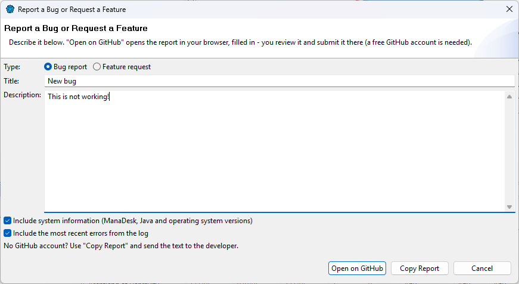

Report a bug or request a feature
Found a problem, or have an idea? Tell us from inside ManaDesk.
- Choose .
- Choose Bug report or Feature request, and give it a short title.
- Describe it: for a bug, what you did, what you expected and what happened instead; for a feature, what
you would like and what it would help you do.
- Keep Include system information checked (ManaDesk, Java and operating system versions —
nothing personal). For a bug, Include the most recent errors from the log helps a lot.
- Click Open on GitHub. Your browser opens the report on ManaDesk's GitHub page, already filled in:
review it and click Submit.

Submitting needs a free GitHub account. No account? Click Copy Report instead and send
the text to the developer.
You can follow your report, and any question about it, on
ManaDesk's GitHub issues page.
See also: Troubleshooting and FAQ